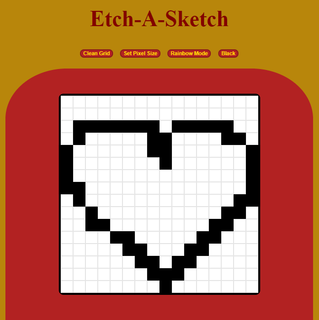

Quadro Mágico
Desenvolvido durante o curso Web101 do projeto Odin Project.
Sabe aqueles brinquedos de criança que são quadrinhos magnéticos? Então, essa é uma versão virtual dele!
Você pode escolher o tamanho do "pixel", e usar o modo arco-íris para deixar tudo colorido.
Design Responsivo.
Você pode testá-lo no meu GitHub
e também ver o código fonte.

Quadro Mágico